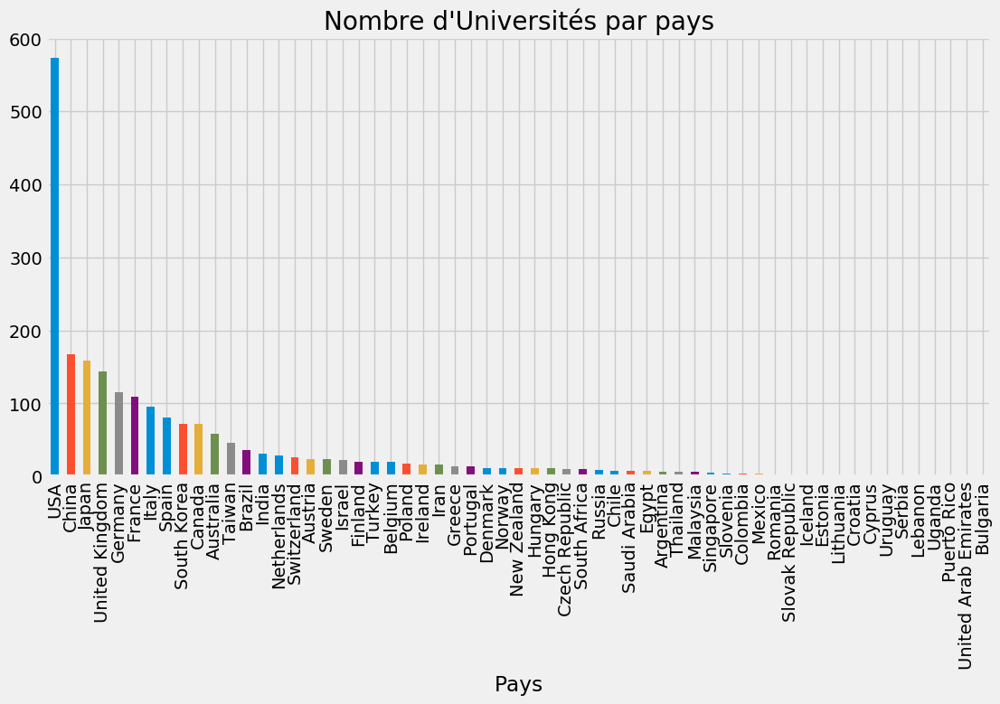
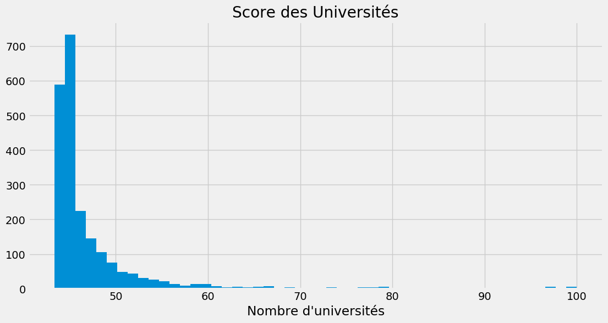
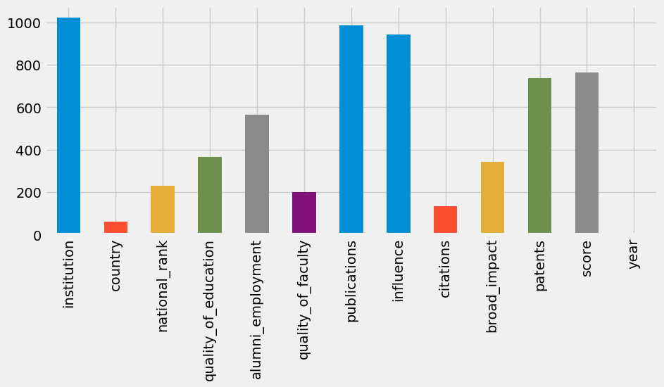
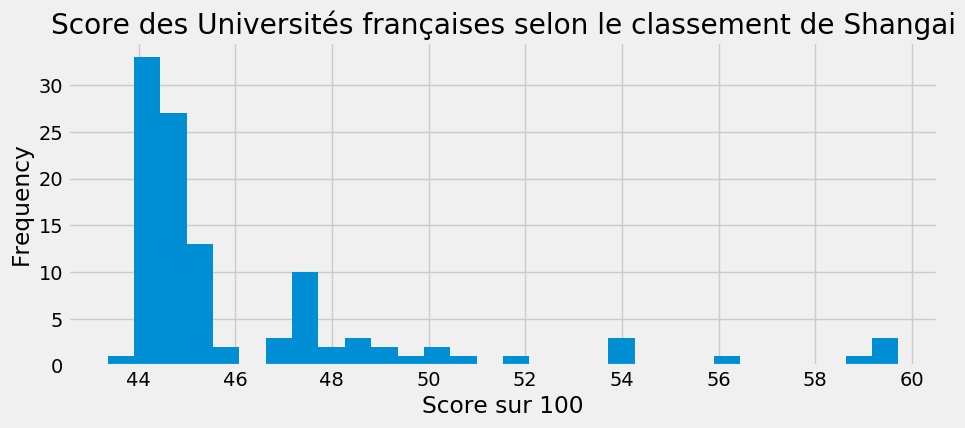

Utiliser Python pour explorer vos données
Python est un langage généraliste, facile à utiliser et très puissant. Aujourd’hui de nombreuses applications et sites webs comme Dropbox, Youtube, Google tournent grâce à du code écrit en Python. C’est aussi à présent le langage qui bat les records en terme en matière d’adoption et de taux de croissance.
Peu de temps après sa création, la communauté scientifique s’y est intéressée, ce qui a condit à l’écriture de la librairie scientifique numpy, dès ce jour l’avenir du langage a changé car l’écriture de cette librairie a posé la base sur laquelle l’écosystème scientifique et de la data science tourne.
Mon but dans cet article est de vous présenter brièvement l’écosytème data science en Python en réalisant une analyse de données. Je suis bien content !
Importation des libraries
# Nous commençons par importer les libraries que nous utiliserons tout au long de cette analyse
import pandas as pd # librairie pour lecture et manipulation de donnée
import numpy as np # notre fameuse numpy pour le calcul numérique
import matplotlib.pyplot as plt # pour les visualisation
Dans cet article je vais travailler sur une base de donnée qui porte sur le classement de Shangai des Universités mondiales. La base de donnée a été librement distribuée par l’Organisme du classement et je l’ai eu grâce à la plateforme Kaggle.
Lecture de la base de donnée
classement = pd.read_csv("cwurData.csv")
La base vient d’être lue en utilisant la librairie Pandas. Comme à mon habitude j’aime bien rapidement regarder les premmières lignes d’une base de donnée pour me faire une représentation visuelle quand je travaillerai sur elle.
classement.head()
| world_rank | institution | country | national_rank | quality_of_education | alumni_employment | quality_of_faculty | publications | influence | citations | broad_impact | patents | score | year | |
|---|---|---|---|---|---|---|---|---|---|---|---|---|---|---|
| 0 | 1 | Harvard University | USA | 1 | 7 | 9 | 1 | 1 | 1 | 1 | NaN | 5 | 100.00 | 2012 |
| 1 | 2 | Massachusetts Institute of Technology | USA | 2 | 9 | 17 | 3 | 12 | 4 | 4 | NaN | 1 | 91.67 | 2012 |
| 2 | 3 | Stanford University | USA | 3 | 17 | 11 | 5 | 4 | 2 | 2 | NaN | 15 | 89.50 | 2012 |
| 3 | 4 | University of Cambridge | United Kingdom | 1 | 10 | 24 | 4 | 16 | 16 | 11 | NaN | 50 | 86.17 | 2012 |
| 4 | 5 | California Institute of Technology | USA | 4 | 2 | 29 | 7 | 37 | 22 | 22 | NaN | 18 | 85.21 | 2012 |
classement.shape
(2200, 14)
La base de donné contient donc 2200 observations et 14 variables. La lecture des premières lignes de la base de donnée nous donne une indication que ces classents se sont faits sur plusieurs années, donc il est probable que certaines universités reviennent plusieurs fois.
Nous allons dans la suite de ce projet détermine quelles sont les uniques occurences des universités et combien d’universités au total nous avons dans la base.
classement = classement.set_index("world_rank")
On peut maintenant se demander s’il y a des données manquantes dans ce classement? Et si oui, où sont-elles localisées? La librairie Pandas nous offre des outils très utiles pour répondre à cette question et permet même de corriger les données manquantes grâce à des algorithmes puissants.
classement.isna().sum()
institution 0
country 0
national_rank 0
quality_of_education 0
alumni_employment 0
quality_of_faculty 0
publications 0
influence 0
citations 0
broad_impact 200
patents 0
score 0
year 0
dtype: int64
Cette commande nous montre que la plupart des variables de la base de donnée ne contient pas de données manquantes, seule la variable broad_impact en contient, et 200 précisément!
Signification des libellés
world_rank : classement mondial de l’Université
institution Nom de l’Université
country : Le pays dans lequel se trouve l’Université
national_rank: classement de l’Université au niveau national
quality_of_education: rang en fonction de la qualité de l’éducation
alumni_employment: Rang de l’Université en fonction de ses anciens étudiants
quality_of_faculty: Rang en fonction de la qualité de la Faculté
publications: Rang en fonction des publications (plus l’Université publie, mieux elle est classée)
influence: Rang en fonction de l’influence
citations: Nombre des étudiants à l’Université
broad_impact: Impact général (only available for 2014 and 2015)
patents rank for patents : rang pour les brevets
score score total, utilisé pour déterminer le classement
year: année du classement (2012 à 2015)
Ayant maintenant ces libellés en tête, on peut explorer davantage la base de donnée. Les clarifications nous indiquent la variable broad_impact n’est disponible que pour les années 2014 et 2015, donc on peut la garder dans notre base et l’explorer plus tard.
A partir d’ici on peut se demander combien d’uniques universités il y a dans la base puisque la base de donnée classe les universités sur 3 ans.
classement["institution"].nunique()
1024
Pour répondre à la question précédente, nous avons donc 1024 différentes universités dans ce classement.
Combien de pays avons nous dans la base?
classement["country"].nunique()
59
Comme on peut le voir, tous les pays du monde ne sont pas représentés, toutes les 1024 Universités de ce classement appartiennent uniquement à ces seuls pays. On peut maintenant se demander quels sont les pays qui ont les plus d’universités dans le classement.
Affichons les 6 premiers et les 6 derniers
classement["country"].value_counts().head(6)
USA 573
China 167
Japan 159
United Kingdom 144
Germany 115
France 109
Name: country, dtype: int64
Les USA, à eux seuls comptent 573 universités soit plus de la moitié des Universités présentes dans le classement. La France figure parmi les premiers avec 109 universités !
classement["country"].value_counts().tail(6)
Serbia 2
Lebanon 2
Uganda 2
Puerto Rico 2
United Arab Emirates 2
Bulgaria 2
Name: country, dtype: int64
On peut aussi voir la distribution de ces universités graphiquement pour avoir une idée plus claire.
plt.style.use('fivethirtyeight') # Thème
plt.figure(figsize = (12,6), dpi= 100) # Pour gérer la taille de la figure
classement["country"].value_counts().plot(kind = "bar")
plt.title("Nombre d'Universités par pays")
plt.xlabel("Pays")
plt.show()

Intéressons-nous maintenant à la distibution des scores. Les scores vont de 0 à 100
plt.figure(figsize = (12,6), dpi= 100) # Pour gérer la taille de la figure
classement["score"].hist(bins = 50)
plt.title("Score des Universités")
plt.xlabel("Nombre d'universités")
plt.show()

Une très grande partie des universités a un score compris entre 25 et 50. Qu’est-ce qui peut expliquer cela? Et quelles sont les universités ayant les meilleurs scores?
Rappellons-nous que les classements sont faits durant 3 années consécutives, donc il se peut qu’une université change de rang pendant ces années. C’est ce que nous allons essayer de voir
On peut se demander ici, combiens de classement il y a eu par année !
classement["year"].value_counts()
2015 1000
2014 1000
2013 100
2012 100
Name: year, dtype: int64
On observe que clairement, les années diffèrent. En 2012 et 2013 seules 100 universités ont été classées. C’est à partir de 2014 que le classement s’est élargi à un plus grand nombre d’universités, 9 fois plus. Pourquoi cela?
Saut
Comme nous l’avons remarqué plus haut, le classement se fait sur 4 années consécutives, il serait donc utile de compter le nombre d’uniques occurences sur ces 4 années.
for cols, title in enumerate(classement.columns):
print(f" Il y a {classement[title].nunique()} valeurs uniques dans, {title}")
Il y a 1024 valeurs uniques dans, institution
Il y a 59 valeurs uniques dans, country
Il y a 229 valeurs uniques dans, national_rank
Il y a 367 valeurs uniques dans, quality_of_education
Il y a 565 valeurs uniques dans, alumni_employment
Il y a 199 valeurs uniques dans, quality_of_faculty
Il y a 987 valeurs uniques dans, publications
Il y a 944 valeurs uniques dans, influence
Il y a 135 valeurs uniques dans, citations
Il y a 343 valeurs uniques dans, broad_impact
Il y a 738 valeurs uniques dans, patents
Il y a 764 valeurs uniques dans, score
Il y a 4 valeurs uniques dans, year
series = pd.Series()
for cols, title in enumerate(classement.columns):
series[title] = classement[title].nunique()
plt.figure(figsize = (10,4), dpi= 100) # Pour gérer la taille de la figure
series.plot(kind = "bar", )
<matplotlib.axes._subplots.AxesSubplot at 0x26ad3cfe470>

Que nous revèlent ces valeurs uniques?
Nous avons un total de 1024 universités dans la base de donné. Le classement mondial va de 1 à 1000. On peut donc déduire qu’il y a des universités qui sont classées plusieurs fois, durant les 4 années successives et également qu’il y a en même temps certaines universités qui sont sorties du classement pendant que d’autres entrent dans le classement, c’est ce qui explique le différentiel 1024 universités et 1000 classements. Même constat pour les variables publications et influence qui avoisinent les 1000 valeurs uniques.
La question qu’on se pose maintenant est de comprendre comment se fait-il qu’il y a si peu de valeurs uniques dans les autres variables servant de classement? Y’aurait-il des chevauchements, où y’aurait-il des universités ex-aequo sur certains classements?
Pour répondre à cette question, nous allons voir dans un tableau année par année la variation des uniques occurences.
series = pd.Series()
unique = pd.DataFrame()
years = list(classement["year"].unique())
for year in years:
mask = classement.loc[:,"year"] == year
df = classement[mask]
for cols, title in enumerate(df.columns):
series[title] = df[title].nunique()
unique = unique.append(series, ignore_index = True)
unique
| alumni_employment | broad_impact | citations | country | influence | institution | national_rank | patents | publications | quality_of_education | quality_of_faculty | score | year | |
|---|---|---|---|---|---|---|---|---|---|---|---|---|---|
| 0 | 50.0 | 0.0 | 81.0 | 16.0 | 81.0 | 100.0 | 58.0 | 51.0 | 80.0 | 67.0 | 78.0 | 99.0 | 1.0 |
| 1 | 42.0 | 0.0 | 83.0 | 18.0 | 76.0 | 100.0 | 57.0 | 41.0 | 79.0 | 58.0 | 79.0 | 96.0 | 1.0 |
| 2 | 473.0 | 215.0 | 63.0 | 59.0 | 899.0 | 1000.0 | 229.0 | 71.0 | 919.0 | 354.0 | 176.0 | 435.0 | 1.0 |
| 3 | 564.0 | 211.0 | 61.0 | 59.0 | 915.0 | 1000.0 | 229.0 | 736.0 | 924.0 | 367.0 | 176.0 | 416.0 | 1.0 |
Dans ce tableau, nous avons les valeurs uniques année par année de toutes les colonnes de notre base de donnée.
Les deux premières lignes représentent les années 2012 et 2013, pour ces années on observe que les valeurs uniques sont faibles car le classement s’effectuait sur un total de 100 pays seulement. Nous allons nous intéresser uniquement aux colonnes significatives : en 2012 il y a eu le classement en fonction des publication comptait 80 classements, ce nombre a baissé à 79 en 2013.
Les deux autres colonnes représentent les années 2014 et 2015, là aussi on voit les évolutions des valeurs uniques.
Les Universités françaises
On peut maintenant s’intéresser aux Universités françaises, pour voir leurs caractéristiques.
france = classement["country"] == "France"
univ_france = classement[france]
univ_france.head()
| institution | country | national_rank | quality_of_education | alumni_employment | quality_of_faculty | publications | influence | citations | broad_impact | patents | score | year | |
|---|---|---|---|---|---|---|---|---|---|---|---|---|---|
| world_rank | |||||||||||||
| 48 | University of Paris-Sud | France | 1 | 48 | 101 | 25 | 73 | 96 | 101 | NaN | 101 | 50.44 | 2012 |
| 54 | École normale supérieure - Paris | France | 2 | 3 | 61 | 77 | 101 | 101 | 101 | NaN | 101 | 49.10 | 2012 |
| 61 | École Polytechnique | France | 3 | 47 | 3 | 101 | 101 | 101 | 101 | NaN | 101 | 48.33 | 2012 |
| 63 | Pierre-and-Marie-Curie University | France | 4 | 54 | 101 | 84 | 36 | 53 | 78 | NaN | 101 | 48.26 | 2012 |
| 100 | Mines ParisTech | France | 5 | 44 | 4 | 101 | 101 | 101 | 101 | NaN | 101 | 43.36 | 2012 |
Score des Universités françaises
plt.figure(figsize = (10,4), dpi= 100) # Pour gérer la taille de la figure
univ_france["score"].plot.hist(bins = 30)
plt.title("Score des Universités françaises selon le classement de Shangai")
plt.xlabel("Score sur 100")
plt.show()

On observe que les scores des Universités françaises se situent dans l’intervalle [40, 60]. Toutefois la plupart d’entre elles ont un score inférieur à 50.
Quelles sont les universités 5 premières et dernières universités françaises selon ce classement? On ne s’intéresse qu’à l’année 2015
univ_france = univ_france
univ_france[univ_france["year"] == 2015][["institution", "national_rank", "score"]].nlargest(5, "score")
| institution | national_rank | score | |
|---|---|---|---|
| world_rank | |||
| 36 | École Polytechnique | 1 | 59.20 |
| 37 | École normale supérieure - Paris | 2 | 58.80 |
| 58 | University of Paris-Sud | 3 | 54.21 |
| 63 | Pierre-and-Marie-Curie University | 4 | 53.79 |
| 104 | Mines ParisTech | 5 | 50.34 |
univ_france[univ_france["year"] == 2015][["institution", "national_rank", "score"]].nsmallest(5, "score")
| institution | national_rank | score | |
|---|---|---|---|
| world_rank | |||
| 989 | University of Pau and Pays de l'Adour | 49 | 44.04 |
| 978 | University of Reims Champagne-Ardenne | 48 | 44.05 |
| 966 | University of Valenciennes and Hainaut-Cambresis | 47 | 44.06 |
| 896 | University of Western Brittany | 46 | 44.13 |
| 879 | University of Orléans | 43 | 44.15 |
La première Université française est classée 36e sur le rang mondial tandis que l’Université française dernière du classement national se positionne à la 989e place mondiale selon le classement Shangaï en 2015.
C’est quoi les contrastes?